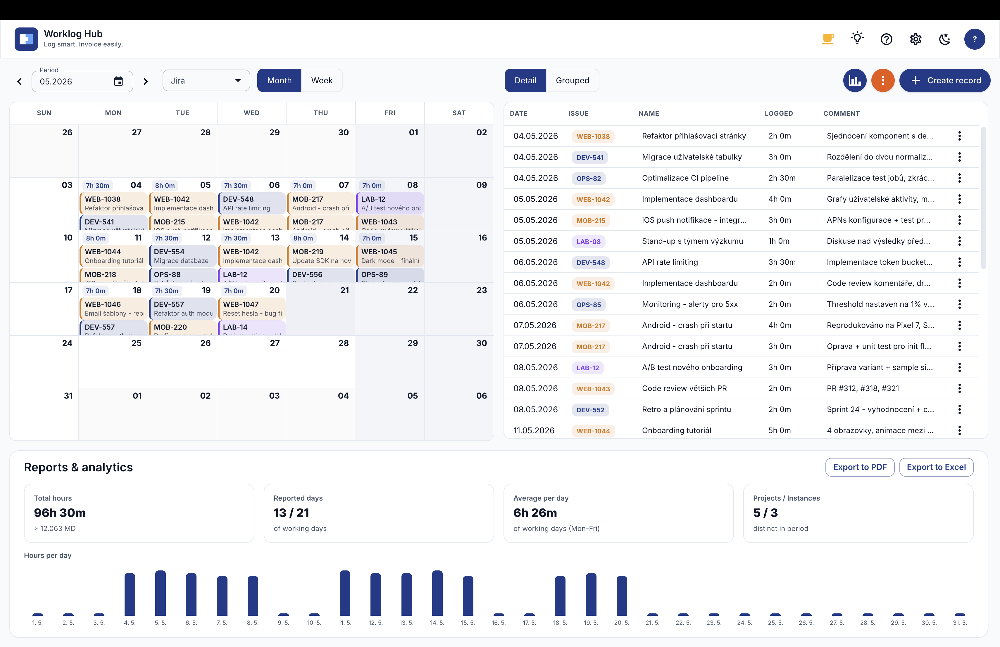

Vykazujte chytře.
Fakturujte snadno.
Rozšíření pro Chrome a Edge pro chytré vykazování práce nad Jira instancemi. Kalendářový přehled celého týdne, multi-instance, fulltext napříč všemi Jirami a reporty pro fakturaci - bez API tokenů a bez telemetrie.

Vše, co potřebujete pro vykazování v Jira
Worklog Hub je pro lidi, co si práci nejdřív zapisují do vlastních poznámek - souboru nebo na papíru - a do Jiry to odesílají až později - po kontrole, nebo úpravě. Ten mezikrok udělá za vás. Méně přepínání kontextu, méně chyb, rychlejší fakturace.
Kalendář + tabulka
Přepínání den / týden / měsíc. Přidávání, editace, mazání a drag & drop worklogů mezi dny - vše bez opuštění rozšíření.
Fulltext napříč Jirami
Najdi úkol bez znalosti kódu - klíč (PRJ-123), prefix (PRJ-), slovo nebo frázi. Autocomplete sám zvolí JQL a paralelně se ptá všech instancí v summary, popisu i komentářích.
Multi-instance bez konfigurace
Připoj víc Jira Cloud instancí najednou. Každá má svůj popisek a barvu. Cílová Jira pro worklog se detekuje automaticky podle toho, kde issue reálně existuje.
Návrhy z komentářů
Komentoval jsi v Jiře, ale zapomněl vykázat? Worklog Hub denně skenuje a v rozích nabídne návrh worklogu - jeden klik a máš v lokálu draft k editaci.
Kalendářové návrhy (.ics)
Připoj soukromé Google / Outlook / iCloud .ics feedy. Aplikace najde meetingy bez worklogu a sama je spáruje s Jira ticketem (klíč, prefix, fulltext).
Návrhy z aktivity v prohlížečiverze 1.6
Rekonstruuj pracovní sessiony z historie prohlížeče. Bloky s Jira URL se napárují na ticket automaticky, ostatní dostanou popis podle dominantní kategorie (Confluence, GitHub, Slack…). Vše běží lokálně a deterministicky.
Lokální AI v prohlížečiverze 1.6Experimentální
WebLLM model běží lokálně přes WebGPU - žádná cloudová API, žádné odesílání dat. On-demand tlačítka: návrh komentáře k worklogu z Jira kontextu a sémantické párování kalendářových schůzek na Jira tickety.
Můj přehled úkolůverze 1.6
Rychlý přístup ke všem assignovaným otevřeným úkolům napříč všemi Jira instancemi. Jeden klik otevře detail v Jiře, nebo přímo založí worklog s předvyplněným issue. Vlastní záložka Oblíbené drží hvězdičkou připnuté tickety, ke kterým se vracíš nejčastěji.
Local-first režim
Rozepiš worklogy lokálně, projdi přes celý týden a hromadně je odešli na server, až budeš připravený. Žádný spěch, žádné zapomenuté drobnosti.
CSV import
Importuj výkazy z Excelu - čárka i středník jako oddělovač (EU lokály bez úprav). Cílová Jira instance se per-řádek dohledá automaticky podle prefixu nebo fulltextu.
PDF & Excel reporty
Activity Reports pro fakturaci klientovi nebo interní reporting. Konfigurovatelné mapování prefixů ticketů na projekty v reportu, statistiky průměrů.
Drag & drop + duplikace
Plain drag přesune záznam mezi dny. Ctrl + drag duplikuje na cílový den. Funguje v měsíčním i týdenním pohledu jednotně, s vizuálním zvýrazněním cíle.
Hromadné vykázání
Logni 15 minut overhead Po–Pá jedním kliknutím. Ctrl+click na dny vybere více dat naráz, dialog je rozepíše jako mazatelné chipy.
Soukromí by-default
Žádné API tokeny ani hesla - využívá tvoje existující přihlášení do Atlassianu. Data zůstávají v localStorage, žádná telemetrie, žádné servery třetích stran.
8 jazyků
Čeština, Slovenčina, Polski, English, Deutsch, Español, Français, Italiano. Přepínání přímo v Nastavení, včetně lokalizace date pickerů.
Podívej se na to v akci
Klikni na libovolný snímek pro detail v plné velikosti.
Co se s tvými daty děje? Nic.
Worklog Hub nikam neposílá tvoji práci. Žádný cloud, žádné analytiky, žádný backend.
Žádné API tokeny
Rozšíření využívá tvoji existující Atlassian session (stejnou, kterou máš v prohlížeči). Nikde se nic neukládá.
Jen tvoje instance
Rozšíření komunikuje POUZE s https://*.atlassian.net, který si sám/sama nakonfiguruješ. Nic jiného.
Bez telemetrie
Žádné analytiky, žádný tracking, žádné A/B testy. Nemusíš nic odsouhlasovat, protože není co.
localStorage
Konfigurace instancí, lokální draft worklogy a preference zůstávají v tvém prohlížeči. Můžeš je kdykoliv smazat.
Našel jsi bug? Dej vědět.
Worklog Hub vyvíjím sám ve volném čase a nejlépe se opraví to, o čem vím. Pošli mi prosím e-mail s popisem situace, krokem reprodukce a ideálně screenshotem.
Napsat e-mailPo kliknutí se otevře tvůj e-mailový klient s předvyplněným předmětem.
Podpořte autora
Worklog Hub vyvíjím ve volném čase. Pokud vám šetří čas, můžete podpořit další vývoj dobrovolným darem — díky moc!